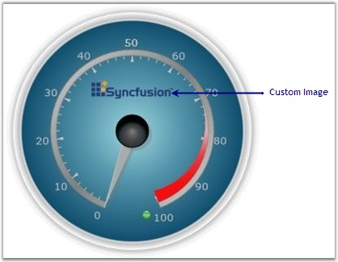

You can also add images to the Circular Gauge. Given below are some of the major properties which can be used to customize the placement of the image in the Circular Gauge.
· ImageWidth - Specifies the Width of the image
· ImageHeight - Specifies the Height of the image
· ImageSource - Specifies the image for the Circular Gauge
The below code snippet illustrates the above settings.
|
[XAML]
<syncfusion:CircularGauge.Images> <syncfusion:GaugeImage ImageSource="C:/image/synclogo.jpg" Location="50,50" ImageHeight="30" ImageWidth="70" ResizeMode="Stretch"/> </syncfusion:CircularGauge.Images> |
|
[C#]
GaugeImage gaugeImage = new GaugeImage(); gaugeImage.ImageWidth = 90; gaugeImage.ImageHeight = 30; BitmapImage bmp = new BitmapImage(new Uri("../Images/synclogo.jpg", UriKind.Relative)); gaugeImage.ImageSource = bmp; gaugeImage.Location = new Point(50, 15); gaugeImage.ResizeMode = GaugeImageResizeMode.Stretch; circularGauge1.Images.Add(gaugeImage); |

Figure 48: Image added to the Circular Gauge